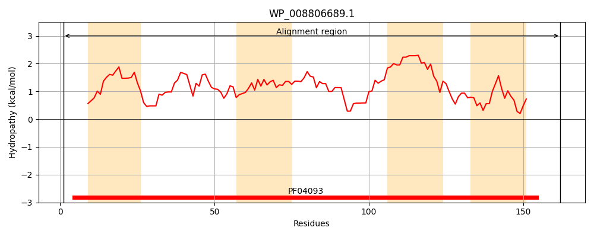
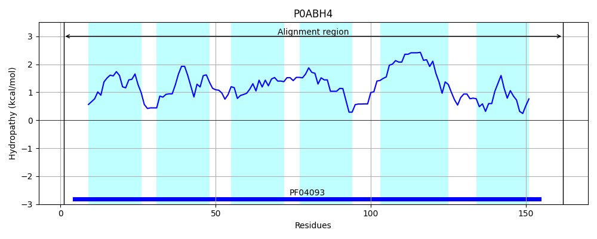
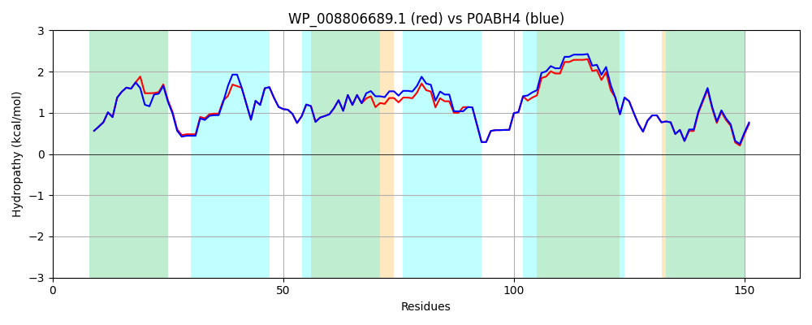

Hit Accession: P0ABH4
Hit TCID: 9.B.157.1.3
Hit Description: gnl|BL_ORD_ID|8704 gnl|TC-DB|P0ABH4|9.B.157.1.3 Rod shape-determining protein MreD OS=Escherichia coli (strain K12) GN=mreD PE=1 SV=1
Mach Len: 162
e:0.000000
Query TMS Count : 4
Hit TMS Count: 6
TMS-Overlap Score: 3.550000
Predicted Substrates:CHEBI:5140;folic acid
BLAST Alignment:
Score: 796 , Bit scores: 311 bits, E-value: 1.1e-110, Alignment length: 162, Percentage identity: 94
Query: 1 MASYRSQGRWVIWLSFLIALLLQIMPWPADISVFRPNWVLLILLYWILALPHRVNVGTGFVMGAILDLISGSTLGVRALSLSIIAYLVALKYQLFRNLALWQQALVVMLLSLAVDIIVFWAEFLVINVSFRPEVFWSSVVNGVLWPWLFLLMRKVRQQFAVQ 162
MASYRSQGRWVIWLSFLIALLLQIMPWP ++ VFRPNWVLLILLYWILALPHRVNVGTGFVMGAILDLISGSTLGVR L++SIIAYLVALKYQLFRNLALWQQALVVMLLSL VDIIVFWAEFLVINVSFRPEVFWSSVVNGVLWPW+FLLMRKVRQQFAVQ
Sbjct: 1 MASYRSQGRWVIWLSFLIALLLQIMPWPDNLIVFRPNWVLLILLYWILALPHRVNVGTGFVMGAILDLISGSTLGVRVLAMSIIAYLVALKYQLFRNLALWQQALVVMLLSLVVDIIVFWAEFLVINVSFRPEVFWSSVVNGVLWPWIFLLMRKVRQQFAVQ 162 | Protein Hydropathy Plots: |
|---|
|  |  |
Pairwise Alignment-Hydropathy Plot:
|
|---|
|  |